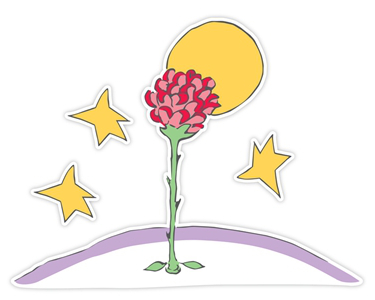

El Principito (en francés: Le Petit Prince) es una novela corta y la obra más famosa del escritor y aviador francés Antoine de Saint-Exupéry (1900–1944).
El Principito es un cuento poético que viene acompañado de ilustraciones hechas con acuarelas por el mismo Saint-Exupéry. En él, un piloto se encuentra perdido en el desierto del Sahara luego de que su avión sufriera una avería, pero para su sorpresa, es allí donde conoce a un pequeño príncipe proveniente de otro planeta. La historia tiene una temática filosófica, donde se incluyen críticas sociales dirigidas a la extrañeza con la que los adultos ven las cosas. Estas críticas a las cosas importantes y al mundo de los adultos van apareciendo en el libro a lo largo de la narración.
A pesar de que es considerado un libro infantil por la forma en la que se encuentra escrito, también posee observaciones profundas sobre la vida y la naturaleza humana. Esto se puede ejemplificar con el encuentro entre el principito y el zorro, quien le enseña el verdadero sentido de la amistad y la esencia de las relaciones humanas; de hecho, la esencia misma del libro se encuentra reflejada en el secreto que le obsequia el zorro al principito: Solo se ve bien con el corazón. Lo esencial es invisible a los ojos
. Asimismo, otras temáticas principales son expresadas a través de frases del zorro, tales como Te haces responsable para siempre de lo que has domesticado
y El tiempo que perdiste con tu rosa hace que tu rosa sea tan importante
.
Una de las frases que más me llamó la atención fue la siguiente:
Tú no eres para mí todavía más que un muchachito igual a otros cien mil muchachitos. Y no te necesito. Tampoco tú tienes necesidad de mí. No soy para ti más que un zorro entre otros cien mil zorros semejantes. Pero si me domesticas, entonces tendremos necesidad el uno del otro. Tú serás para mí único en el mundo, yo seré para ti único en el mundo...
Si les decimos a las personas mayores: “He visto una casa preciosa de ladrillo rosa, con geranios en las ventanas y palomas en el tejado”, jamás llegarán a imaginarse cómo es esa casa. Es preciso decirles: “He visto una casa que vale cien mil francos”. Entonces exclaman entusiasmados: “¡Oh, qué preciosa es!”. Por sus características, podemos identificar al narrador con el propio autor que nos va guiando a lo largo de la historia.
Esta es la caja. El cordero que quieres está dentro. Imaginación es lo que se necesita para ver lo que hay dentro, la caja es una alusión a la imaginación que los adultos ya no suelen usar.
planeta. Ha habido otras, pero ésta es la que ha
florecidoy perdura, es la metáfora de la mujer que ama, que se ha quedado para siempre en su corazón. Bonita, huele bien, perfecta y, al mismo tiempo, llena de imperfecciones. Es frágil, hay que cuidarla, mimarla, estar siempre atento; además es orgullosa, vanidosa, egoísta y mentirosa. Aún así es su flor, única entre otras. Pone de manifiesto la inocencia del principito, su inexperiencia. Responsable de la huida del principito por crearle una gran confusión con su forma de hacer o decir las cosas.
¡Niños, atención a los baobabs!. Los niños somos nosotros. Hay que tener disciplina, cuidado, estar atento siempre para diferenciar lo bueno de lo malo y actuar en consecuencia.
Rosase sienta protegida y querida, aunque realmente no los necesita.